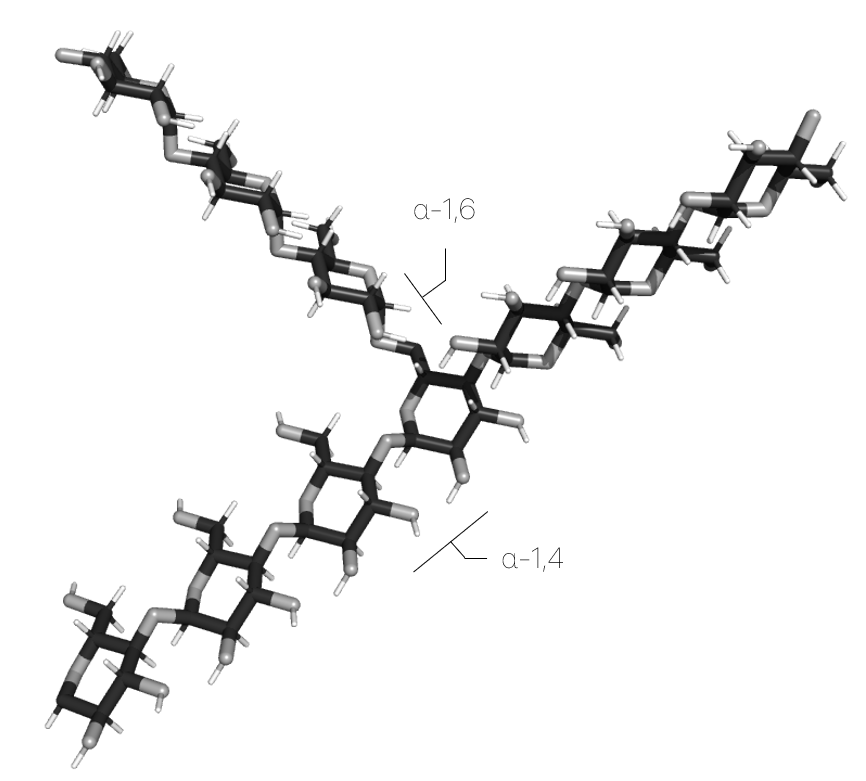

Builder
The Builder is a submodule of
ProtoSyn.Sugarsmodule. As such, the following section introduces both new types and methods that work together, in a generally independent way from the rest of the module, and require an unique exploratory section on their own.
As an expansion of the Core module Builder, this submodule introduces the carbohydrates LGrammar type, as well as the necessary methods to append and insert Fragment instances from a derivation.
ProtoSyn.Sugars.grammar — Functiongrammar([::Type{T}, polyname::String]) where {T <: AbstractFloat}Build a LGrammar for polysaccharide polyname from the grammars.yml file available in the Sugars resource directory ("amylose", by default). The returned LGrammar can then be used by the ProtoSyn.build function to build the polymer.
Examples
julia> g = Sugars.grammar();
julia> pose = ProtoSyn.build(g, seq"AAAβB[ɣCɣCɣC]AAA")
Figure 1 | Small example of a ramified sugar (such as amylopectin), built in ProtoSyn.